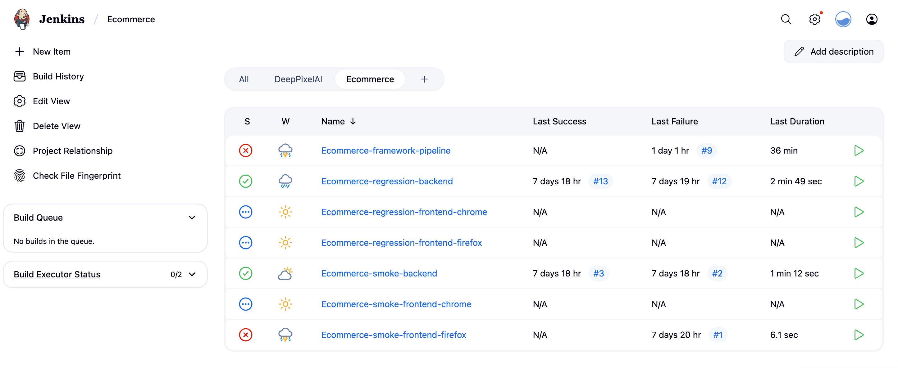
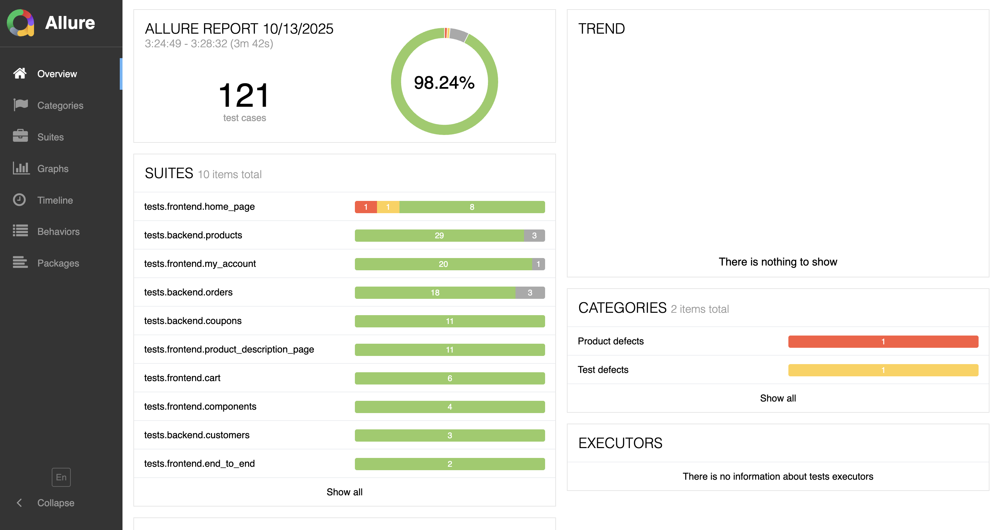
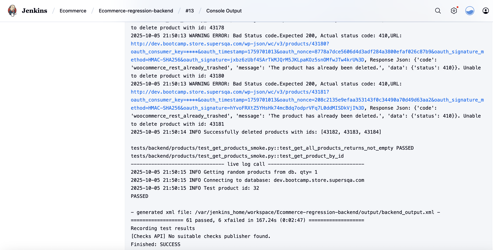
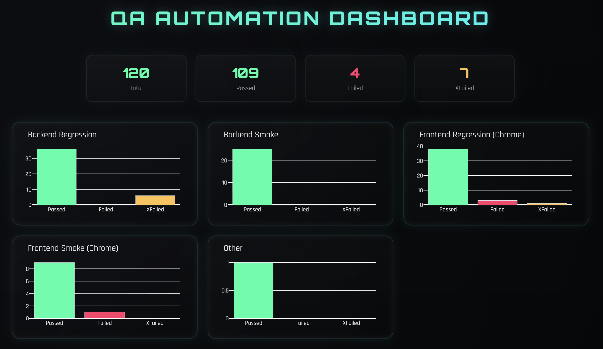
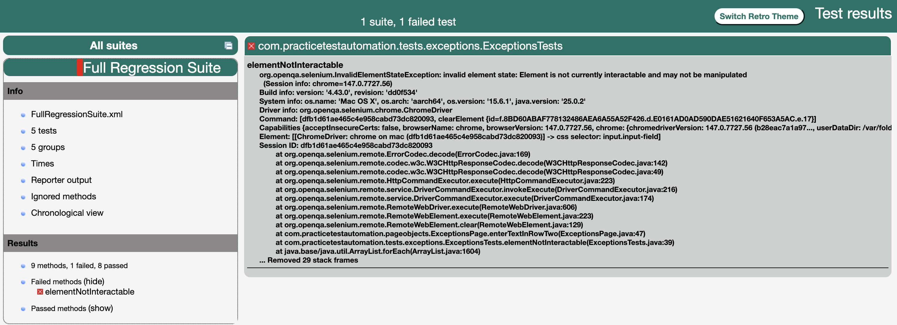
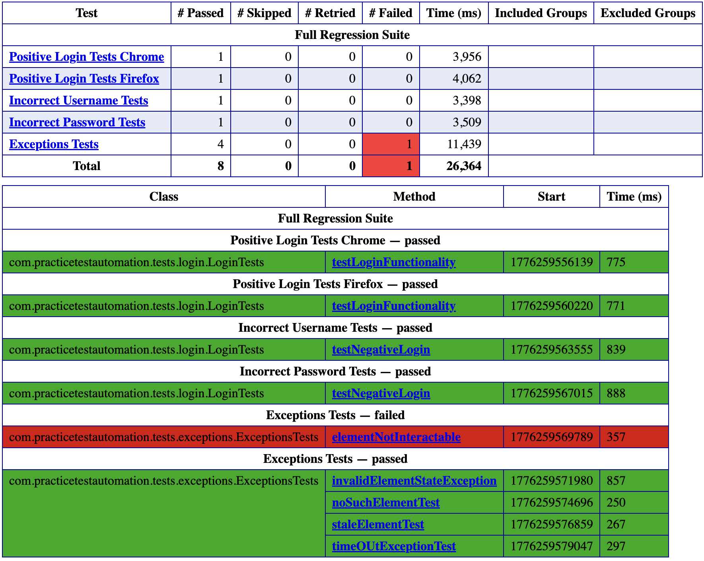
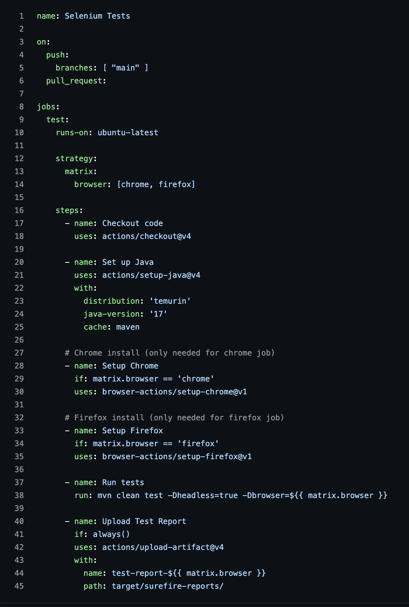
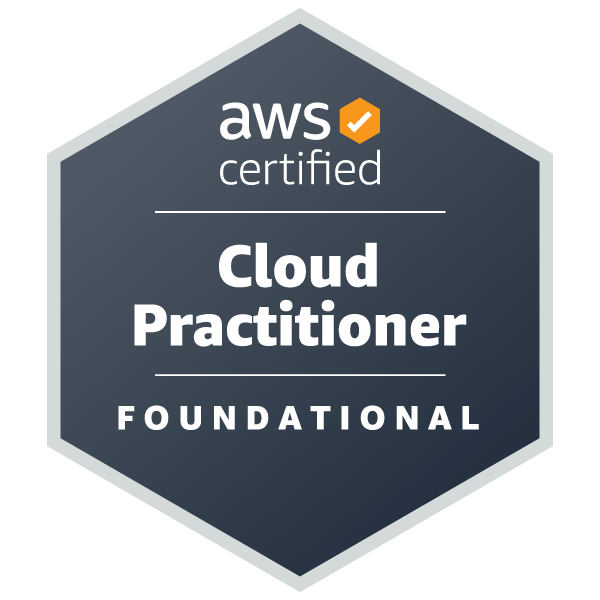
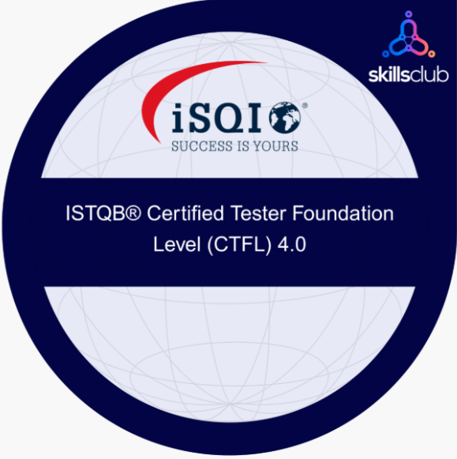
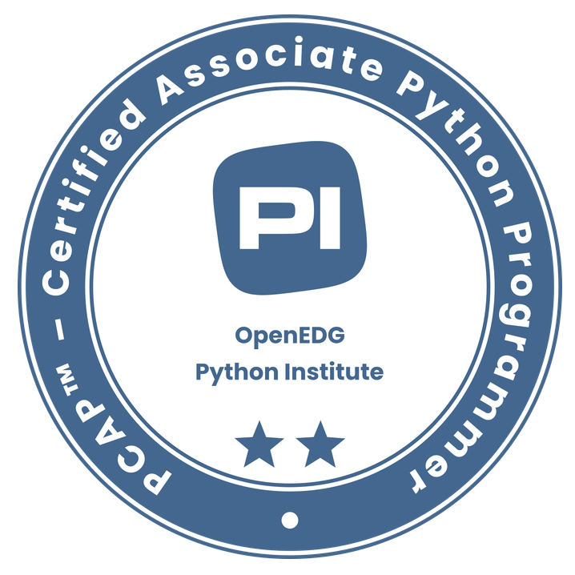

Building high-quality automated test frameworks and CI/CD pipelines for web apps and APIs. Passionate about QA, automation, and cloud technologies.
View ProjectsI am a QA Automation Engineer skilled in Python and Java, with experience in Selenium, PyTest, and TestNG for building automated test frameworks. I specialize in UI and API test automation, database validation, and CI/CD integration using GitHub Actions, Jenkins, and Docker.
I design modular, reusable automation frameworks using Page Object Model (POM), apply object-oriented programming principles, and integrate testing into CI/CD pipelines for efficient and reliable software delivery. I am continuously expanding my skills in cloud platforms and modern testing tools.
Python · Pytest · Selenium · API Testing · CI/CD (GitHub Actions & Jenkins)
Jenkins Jobs & Pipeline List:

Allure Frontend Dashboard:

Jenkins Backend Regression Console:

Python · Pytest · Selenium · Plotly · GitHub Pages

Java · Selenium · TestNG · Maven · Page Object Model
Surefire Report:

TestNG Report:

GitHub Actions Pipeline:

Certifications:


